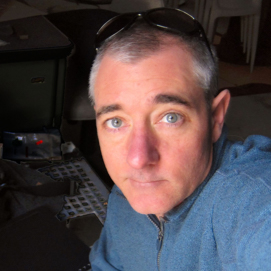

Meet The Nexialists
Marshall Clemens

Marshall Clemens is founder of Idiagram; a consulting firm dedicated to the application of systemic analysis and mapping to facilitate understanding, strategy-making, and alignment for complex multi-stakeholder problems.
Marshall has 24 years of experience designing visual tools to help solve complex global issues such as obesity, mental capital, sustainable finance, and sustainable supply chains Marshall is a co-founder and our mapping guru.
Alexandra Kanitz

A varied international career fueled Alexandra with a passion for work which combines strategic thinking with her drive to make change happen on the ground. Enthusiastic and incurably optimistic, she believes ‘where there is a will, there is a way’. She thinks solutions and stirs up teams to do the same. She is Brazilian, and after 18 years based in Europe and working internationally, she enjoys the connections made all over the world, but decided that a small community, mountain lifestyle was in order for her and the family. Alexandra is a co-founder and the CEO of Nexial.
John Rasmussen

With a truly global career spanning 35 years and a natural knack for leadership, John is an inspiring business leader. He is an accomplished executive with extensive experience delivering business performance through leading and motivating multicultural teams. With expertise in strategy, marketing, operations, change leadership and performance management, John combines the ability to conceptualise and formulate strategy with a distinguished track record of operational and P&L delivery. John is a co-founder and director of Nexial.
Bonita Craig

A seasoned management consultant, Bonita is well-versed in taking new services and offerings to market whilst also managing successful client relationships through the course of service delivery. She is particularly adept in coaching and training team members to support new business growth.